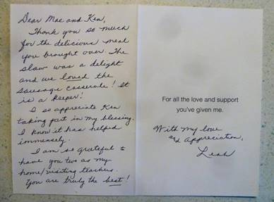
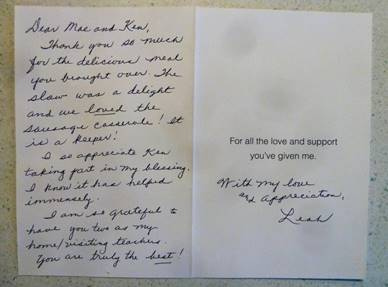
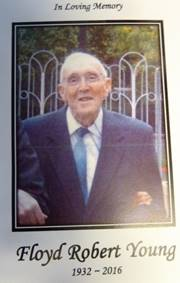
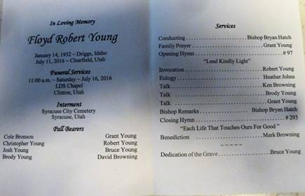
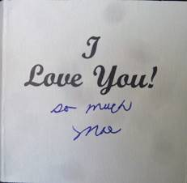
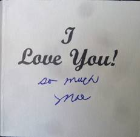

Friday, July 1, 2016
It was a beautiful morning and we enjoyed another day of relaxing. We had a nice fish and egg breakfast. We next switched the parking area of our camper so that Scott and Michelle’s would have plenty of space for their camp trailer. We were getting a little concerned, when it passed noon, and Scott and his family hadn’t arrived yet. About 1PM they arrived. Scott explained that he hadn’t got home from work until almost 4pm yesterday and had to be at the Davis Technical School at 5pm so he didn’t have time to do any packing yesterday. It just took longer getting away this morning. After getting their camper set up and leveled, we took Schott’s truck and kayak, as well the children and drove up to the dam. Roy also went with us and after getting there, we realized that we didn’t bring any chairs to set on. All of them stayed and I drove back to camp and got some chairs. We had a nice time at the dam before returning to camp. Roy, Kylan, Scott and I then went down to Huntsville where Scott got gas in the truck and I bought a few food items. When we got back to camp, we got a campfire going and roasted hot dogs for dinner. We had an enjoyable evening, then I made Roy’s bed and he soon went to bed. I entered my journal while Mae spent time with the family.
Saturday, July 2, 2016
Roy, Mae and I all slept well last night although we heard this morning that there was a group close to us that was causing quite a lot of commotion until the Park managers had to call the Sheriff and have him escort them from the park. We had an enjoyable and relaxing morning. Scott took his family up to the reservoir where they could use their boats and play in the water. Instead of going, I took a nap. When I woke Mae and Roy also had stayed in camp. We finished reading the book “As I Have Loved You” by Kitty de Ruyter. It is sure a very interesting story of her and her family’s life. We sure found it to be a great book. After Scott and his family returned, we visited for a little while and then Mae started playing games with the children. I started getting the camper ready to go home. I finished up about the time that Mae had wanted to leave for home. When I turned a sharp corner as we came down Ogden Canyon, I heard something fall from inside the camper. I guess that I had forgotten to lock the cabinets before we left camp. When we got home, I asked Mae for the keys. Both of us thought that we had brought the pickup keys with us and Mae said that she didn’t know what I had done with them. I questioned that and before long we were both upset. Mae finally found the keys in the computer bag, but by then we had upset feeling between both of us. I decided not to take the truck down to the storage area tonight. Roy and I went over to Del Taco to get something for dinner and we were given the wrong order and so had to return to get it corrected. From there we went to the Chevron station to get gas and a car wash. When we went to the car wash it was closed for repairs. After eating, I got more things stored in our shed. I then caught my journal up to date before we went to bed.
Sunday, July 3, 2016
I finished reading the 2nd book of the Book of Mormon by David J. Ridges this morning. Although I believe personally I got more insight out of the first book, I have still enjoyed this book and am looking forward to commencing book three. I called the McKay Dee hospital to check on Bob and Stacy answered the phone. She and Grant are waiting for the Doctor to come to talk to them, but it doesn’t sound like he is doing well. Stacy said she would call me after talking to the Doctor. We attended our block meetings, but after Sacrament meeting Roy got quite dizzy and so I took him home and got him something to eat. After eating and resting. he felt some better so I went back and caught the last of Priesthood meeting and Sunday school. After having dinner, Roy and I drove to the Salt Lake airport where we picked up Russ Smith, Roy’s son-in-law. When we got back home Mae prepared Russ something to eat. This evening Roy, Russ, Mae and I went up to the hospital to visit Bob. We had a nice visit with him. He told the Doctor that he didn’t want to do anything that would prolong his life. I had to agree with him. Like he said, if they could make him well that would be one thing, but just to prolong his life he is not in favor of that. Roy, Russ and I gave Bob a blessing before we left. We soon went to bed after getting home, but it was still after 11pm before Mae and I got to bed.
Monday, July 4, 2016
I got up at 6:25 this morning, but Mae didn’t slept very well so I had her go back to bed. I got breakfast and Russ and Roy left for California about 8am. Mae ate breakfast and then started house work. I laid down and slept for about another ½ hour. Mae has been busy all day and I have got quite a lot done also. I installed a new sprinkler head in the lawn where the water is not reaching, put the camper away, and helped Mae vacuum the floors. Mae and I went down to Gifford’s and picked Logan Berries and Raspberries. We pulled almost all of the Radishes although they are getting quite large and will not be as tender. Lee invited us to come back and watch the movie “The 4th of July” with them. It was a good movie but there was more strong language than we normally watch. It is almost midnight so we are off to bed.
Tuesday, July 5, 2016
I woke before 8am and after my normal morning routine and breakfast, I went into the Ogden Temple and did proxy Baptism for Willis Campbell as well as 4 or 5 others whose names were in the Temple. On the way home from the Temple, I stopped at Durk’s Plumbing and got some sprinkler parts and some black pipe, with caps, to install in Jeff’s yard so that our volleyball standards can be mounted. When I got home we ate lunch and then went to the church house to meet with others from our Ward. We went into the Ogden Temple where we did Initiatory Ordnances for the dead including Willis Campbell. After leaving the Temple Mae and I went to Costco where Mae picked up a few items and I bought each of us a frozen yogurt. After getting home, I repaired three sprinkler heads. Tim Grogan, next door, went with me and we loaded the shell onto my pickup. This evening Layne Johnson went with me to administer to Evelyn Hilton. Evie is in terrible pain and she is out of pain medication. Harold said that he called the Pharmacy and they said that Harold had picked up the prescription at 10 or 11 am, I might be wrong about the time. Harold doesn’t think he could have picked it up as he and Evie were at the Hospital at that time. I may be totally wrong, but my feelings are leaning towards Mike (Evie’s son) forging Harold’s signature and getting the prescription, as he is in drugs and uses Evie’s medications. I visited with Bishop Mullins and he wants me to take Harold to the pharmacy tomorrow and compare signatures and then decide from there what action to take. This evening I called Jeff as we are unable to find our volleyball and net, but he still wants to install the volleyball standards. Also, he would like me to bring our projector and the corn hole game.
Wednesday, July 6, 2016
Bishop Mullins called and wants to talk to Mae and I. We went down after we finished a wonderful breakfast of hot cakes and eggs. We visited with Bishop Mullins concerning Evie. Last night we were concerned about Evie’s medication coming up missing. Our concern is that Evie’s son, Mike, may have forged Harold’s signature and picked up the prescription. That was Bishop’s concern and so I was going to do more investigating about the matter. We stopped over to Hilton’s, after visiting with Bishop, and found that they had found the prescription and so everything is ok. I called Bishop Mullins and let him know. We still have some concerns but there is nothing we can do now. Today has been a busy day getting ready to go to Idaho for our family reunion. We have been concerned about where the Volley ball and net have been put. I had checked all items off my list and Mae has most of her list checked off. That is a good feeling. Brother Gifford called and asked if I could assist him in giving Sister Leah Nelsen a Blessing. That was a privilege and I enjoyed being with Lee. I stopped and visited with the Patterson’s, just to see how they are doing, as Brother Patterson was sick Sunday. He is feeling much better now. This evening Mae and I watched a show on Net Flix, but I really had trouble hearing it. We started a second show, but turned it off and went to bed.
Thursday, July 7, 2016
I was up at 6:30 this morning. I got some reading done but turned to prayer for guidance and personal strength. The Lord has blessed me in so many ways but I continually have to pray for strength to endure the everyday challenges of life. While Mae was busy with other things, I prepared egg omelets for breakfast. It was 11am by the time we got packed up and off to Twin Falls. The drive went well and we arrived at Jeff and Gail’s about 2:30pm. After unpacking our items, Mae and I took a nap. When I woke, I went to town and purchased some post cement. Gail went to a friend’s home and borrowed a couple more kayaks. When Jeff got home from work, Jeff, Gail, Roy, Shellie, Rachel and Matt went to the river. Mae and I stayed here to get the volleyball court set up and the holes dug using my post hole digger, so I could put the pipes in the holes, cement around them and put caps on them so we can play volleyball when the rest of the family comes tomorrow. Jase & Ben stayed here as they wanted to play “Mind Craft”. Mae asked Jase if he could come help me dig the holes, as I was tired after making the court. He was happy to help and Ben helped with a couple of things also. After cleaning up my tools, etc., Mae and I played a game of corn hole as Jeff had asked if we could bring it up. I won. Those who went to the river came back while we were playing the game. They had a good time kayaking up the Snake River to the bridge and watching the jumpers parachute off the bridge. Mae, Shellie and I played a game of Sequence with Jeff before going to bed. By the time we had gone completely through the deck of cards, each of us had made 1 set of 5, but the rules are that the winner is the first to complete 2 sets of 5. If this is not reached before going completely through the deck the game becomes a draw. This game ended in a draw.
Friday, July 8, 2016
I woke at 6:30 this morning and so quietly slipped out of the bed room so that I didn’t wake Mae. I am not sure where we have my scriptures, but picked up my computer and took it into the kitchen where I could us it without waking others. Sandi and Gary arrived just before Gail was ready to leave for the Steadman Family Park. Scott and his family also arrived about that time, but they stayed and I helped them get their trailer set up along the canal, north of Jeff’s home. Gail, her children, Shellie, Roy and Jase, Mae and Sandi went to the Steadman Family Park where they took their lunch and enjoyed going on water slides and a zip Line and other activities. For dinner, Mike and Becky had Nachos with pulled pork, beans, cheese, sour cream and olives and a tossed salad. This evening Jeff set up a movie screen in the back yard and we watched a show. It was a science fiction movie so that didn’t interest me much but it was good to be with our family.
Saturday, July 9, 2016
For breakfast Scott and Michelle prepared pan cakes, sausage and eggs. Most of the day was spent at the river on kayaks, paddle boards and rafts. Lunch was Hoagies from Wall Mart, furnished by Jeff and Gail. For dinner this evening, Mae and I cooked a Dutch Oven Chicken for everyone. After dinner, Mike, Becky, Paige, Garrett, Mattie and Jessie left for home, as Mike had responsibilities Sunday morning. The rest of us played games and visited. While I was visiting with David, somehow in the conversation, I mentioned that I would like to go into Twin Falls to get a Frozen Yogurt. David immediately picked up on that and so some of us drove over there. That was a great treat.
Sunday, July 10, 2016
Sandi and Gary prepared our breakfast of Dutch Oven Hungry Man’s Breakfast along with muffins. After breakfast, Sandi and Gary packed up to go home. Some of us got ready to attend Church. Just before leaving for church, Grant called me to inform that Bob (Floyd Robert Young) had gone into a coma. Hospice was there and they said that it would just be a matter of time until he passed away. I thanked him for letting me know and told him that I would call later. Shellie, Gail and her children, Mae and I attended Sacrament meeting. By the time we got back home, Sandi and Gary had left for home. After getting home, Shellie prepared Chicken Enchiladas and tossed salad for lunch. I helped Scott and Mishelle get packed to go home. They left shortly after 3pm. The rest of us played some table games this evening.
Monday, July 11. 2016
Shauna prepared a tater tot breakfast casserole that was very good for breakfast. She had made enough for all the family, but due to many already having gone home, there was quite a bit of it left over. David, Shauna, Shellie, Roy, Mae and I then got packed up to leave. Shellie, Roy, Mae and I went to Twin Falls to get gas in our truck and a frozen yogurt. The Orange Leaf was not opened when we got there, but Roy and Shellie saw a Sinclair station that had frozen yogurt, so we stopped there before going onto the freeway for home. We got home about 2:30pm. There was a “Thank You” card from Sister Neilson on our door. After some lunch, we took Roy to the Ogden Airport where he flew back home. I went over to Chancellor Gardens assisted living and saw Bob. I visited with Kathy, her daughter, Lisa, Bob’s grandson (Sherrie’s son), Cole, and a cousin. I also spoke to Bob for a few minutes before coming home. Grant called me at 4:40pm to tell me that Bob passed away at 7:35pm. I spent some time this evening trying to help Grant and Stacy notify family and friends about Bob’s passing and funeral plans. We watched a show on TV and visited late into the night.
 

Tuesday, July 12, 2016
We were late getting up and having a very nice breakfast at 10:30am. I spent some time making phone calls to inform family and friends about Bob. I have also been thinking about the talk I am to give during Bob’s Funeral. I also caught several days up in my journal. Mae and Shellie went shopping this afternoon. This evening we played games and watched “Yours, Mine and Ours” before going to bed.
Wednesday, July 13, 2017
I made egg omelets for breakfast. Shellie and Mae washed the car and stopped at Harmon’s for a few groceries. This evening Shellie played me a game of chess using the timer. Shellie, Mae and I played a game of Racko and then we watched the show “Trouble With Angels” before going to bed.
Thursday, July 14, 2016
This morning we got up early so that we might leave for Salt Lake by 7am. We did have one traffic slowdown but made it to S.L. in time to let Jase and Shellie off at Temple Square. Then Mae and I went up to the V.A. hospital to the Audiologist where I had a hearing test. Their test results look about the same as the other tests I have had. The Audiologist wants more tests and would like me to bring the other tests that I have had, so that he can get a comparison and try to find out why my hearing keeps changing. We met Jase and Shellie and the four of us then went through the Church History Museum. Following that, we went to lunch at JB’s where we all had a great meal. We then went to the Conference Center and really enjoyed our time there. We were all very tired and ready to come home by 3pm. After getting home we watched a show that Jase had. I think between Shellie, Mae and I, we slept through most of it. For dinner we enjoyed grilled hamburgers. We played games until bed time.
Friday, July 15, 2016
After getting up with the normal morning routine, Mae and I went down to Gifford’s and picked beans, raspberries, black berries and Logan berries. Shellie and Jase were already up and had found them some breakfast. Mae then cooked us some hot cakes and we enjoyed them with Yogurt and fresh berries on them. Shellie and Jase are meeting Sandi for lunch in Salt Lake and will stay with her tonight. At 5pm this afternoon Mae and I went to a back yard party for the choir members and their spouses, put on by the choir director Sister Barbara Dainard. We had a very nice time. After returning home, I worked on my talk for Bob’s funeral tomorrow. Mae gave me a lot of help and encouragement.
Saturday, July 16, 2016
I woke up shortly after 4am and continued working on my talk. For some reason I have really struggled with this talk. Again Mae gave me a lot of help and encouragement. When we left for the viewing, I still felt very unsure as to what I am going to talk about. We were some of the first to arrive at the chapel. Shauna had ordered a beautiful spray of flowers from the Ken Browning Family. Later when we went to pay our share for them, David refused to have us pay. We had several of our neighbors and friends from Clinton there to support us and Bob. The Knutson’s, the Neiderhauer’s, Morgan and Marge Thomas, Glen Higley and Diann Graf plus those from the Relief Society Presidency, who took care of the lunch. Cole’s grandparents and members of Carroll’s family members were there. I believe that all of Bob and Carroll’s family were there, most of Irven’s family were there, as well as all of our children and most of their spouces and children. Of course Lois, Janet and Elise came. They are always so supportive of the Family. Also, the owners and others staff members of Chandler Gardens came to show their respect for Bob. The services were appropriate, but the only music was an opening song and a closing song. We were very pleased with the dedication at the cemetery. Full Military Rites were given in honor of Bob having retired with 20 years of service in the U.S. Air Force.
 
Shortly after we returned home from the funeral, I got a call from Barbara Smith asking about Bob. Evidently Roy didn’t remember me calling him to inform him that Bob had passed away. I believe that Roy was the first one that I called, after I was informed of Bob’s death. I also called him back when I was informed of the funeral date and time. When I told Barbara that we had just returned from the funeral, she was so sorry that Roy hadn’t remembered my messages. Barbara told me that Roy called them Saturday morning and said that I had called him about Bob, but he didn’t remember what I had told him. She said that had they known, they would have gotten Roy here as well as some of their family. She wanted me to express apologies and their love to his family.
This evening Mae and I just collapsed and relaxed. Shellie went with Sandy and Gary for the weekend and Jase just likes to be on his computer, so he stayed with us. Jase did play a couple of games of “Spot It” with us, before we went to bed.
Sunday, July 17, 2016
I slept until 7am, but Mae slept until after 8am, when Mae suddenly realized that Jeff and Gail were going to stop here at 8:15AM. After she jumped up and got dressed, Jeff called and said that Gail had to be home for Church as she is giving the lesson in Relief Society today. They, therefore, didn’t stop. I prepared breakfast of eggs and bacon. After breakfast, I went into the bathroom and became quite dizzy and almost fell. I finally laid down and went back to sleep. This morning when I got up, my hearing was very good, but after becoming dizzy my hearing went away and the ringing in the right ear returned also. Mae woke me a little later and I did go to our Church meetings. After returning home, Mae prepared a nice dinner. We tried to visit Sister Hilton and Brother Siglin but neither were home so we stopped and visited Brother and Sister Sheers, for a few minutes. I worked on my journal, catching it up. Mae worked on my journals, while she was doing research for a talk she is preparing for the Porter Family Reunion. While doing so, she was able to find many of my files that we have been concerned that they were lost when our last computer crashed. I am so thankful that David M. had been able to recover those files and Mae found where they had been put. We now have them where I can continue working on them.
Monday, July 18, 2016
We got up about 7am but then Mae reminded me that we needed to go pick berries at Gifford’s. There weren’t very many berries, but that was ok. After breakfast, I started filling water bottles and then took a 3 gallon bottle over to Jackie. Jackie was out of water so she was very happy when I brought her a new bottle. She wanted me to stay a few minutes and visit and so I did. We really got into some good gospel discussions. After leaving there, Assenacio was outside and I got talking with him and that turned into a lengthy conversation. Mae had lunch ready when I finally came home. I have sure been tired today and feel that I have been working all day, instead I really haven’t accomplished very much. This evening I played board games with Shellie and we finished up with Mae joining us for a game of Racco in which I won, but is was close as whoever won the last hand, won the game. It was mid-night when I finally went to bed, however, Shellie needed to vent and Mae was up until after 2am with her.
Tuesday, July 19, 2916
I was up by 7:30am, but it woke Mae and she couldn’t go back to sleep. I tried to help Mae with breakfast but I got busy with other things. Shellie pitched in and helped her. After breakfast, Bishop Mullins called and asked if I could help him give a blessing. I got ready and we gave Sister Blessinger a blessing. She is sure banged up from a young fellow ramming into them while they were in the turning lane right here in the entrance of the mobile home park. Shellie and Jase went to Lagoon this afternoon, even though Shellie really didn’t want to go, especially when Jase told her last night that he didn’t want to go. She had already purchased the non refundable tickets, so they went. Mae and I went into the Ogden Temple this afternoon. It was interesting that as we drove to the Temple, my hearing went way down. I was concerned that I would have trouble hearing in the session but I could hear perfectly during the session. I thought it might be due to the service being recorded, but when I went to the veil, I could also hear perfectly. Later when we went down stairs to the cafeteria, I couldn’t hear the conversation as we ate. My hearing was poor the rest of the evening. Shellie, Mae and I played a couple of games before going to bed and I lost every game. Good night!
Thank you card from Grant & Stacey Young (After Bob’s funeral)
Dear Browning Family,
We just wanted to thank you for the extremely beautiful flowers. They truly made an impact. They couldn’t have been more perfect. We want to thank you all for coming and thank those of your family who helped with the services. We know you and your family meant so much to Dad.
Ken & Mae, we want to express our appreciation to you for all you did for Dad and Mom. We know they counted on you a lot and we know it was hard but you still did it. We want to thank you for all the support you have given us.
Love, Grant & Stacey
P.S. We don’t have all your kid’s addresses, so could you please share this with them.
****Wednesday, July 20, 2016
I woke before 6am and was up for a few minutes when Mae woke. We both went back to bed and slept for a little longer. I then did some scripture reading. When I came out, Mae asked me if I knew where the keys were to the car. That started a search, and I was still looking for them until after 4pm without success. I did have a talk with Shellie and she has certainly gone through her share of challenges, even more than anyone should. Shellie and Mae went to visit Deanna. I got Jase to help me and we hauled some trash away for Sister Marianne Ray. When I got home, I went through all the front room furniture looking for the keys but still no luck.
Thursday, July 21, 2016
When we got up this morning, Shellie had breakfast almost ready for us. We ate and then went to the Viewing and Funeral for Eugene Tew, Rick’s Father. I liked the funeral service better for his than I did for Bob’s, mainly because they had more music for Rick’s father’s funeral. We left after the funeral and Mae wanted to stop at the Distribution Center in Layton. When I got Shellie and Mae in there, it took me over two hours to get them out. Mae and I took a nap for almost an hour after getting home. I have been hurting through my legs and feet most of the day. Mae had chicken thawed when we got home so I grilled those. This evening we watched a show on TV until quite late.
Friday, July 22, 2016
After breakfast this morning, I went to Dr. Gray’s and had my teeth cleaned. Dr. Gray was not there as he had a funeral for his Grandmother to attend. The Dental Hygienist took the x-rays and cleaned my teeth, but could not see any other problems. She said that Dr. Gray would look over the x-rays and call me if there were any problems. I then went to Murdock Chevrolet and got a new transmitter, two new keys and a key ring, which was a total of $235.05. I then stopped at the bank to make a deposit and bought some groceries. I ate some lunch when I got home. Mae, Shellie and I played a couple of hands of Raco and then Shellie went up to visit Georgia. I took a nap while Mae made potato salad for the Glen and Mildred Porter Family Reunion that we are holding tomorrow. I installed a new print cartridge into our printer this afternoon. It has been indicating that it needed a new one for about three months now, but finally quit working. We watched a show on Netflix this evening that was ok, but had quite a different outlook on death and heaven than any I have seen before. Mae, Shellie and I played a few hands of cards before going to bed late.
Saturday, July 23, 2016
I prepared breakfast this morning of egg omelets. We basically prepared for the reunion that we will hold this afternoon. I have been quite dizzy today and so I took a nap. This afternoon we set up for the Reunion and had a fair turn out. Mike had planned on being there, but somehow hurt his back and so called us to say that they weren’t coming. Except for Shellie and Jase being there, none of the rest of our family came. We had a pretty fair turn out and every one seemed to enjoy the event. It was almost 10PM before we got home. Terry and his family have to travel back to Chubbuck, so they will be lucky if they make it by mid-night. It is going on 11pm now so I don’t think we will play games before going to bed tonight.
Sunday, July 24, 2016
We got up about 6:30am to get breakfast for Shellie and Jase and see them off. They left for home about 7:30am. We have sure enjoyed having them here. I just hope and pray that Shellie can find more satisfaction in life. She is one person that is sure trying to live the Gospel and teach it to her children. She is very discouraged over her marriage and now that Roy has removed his garments and is refusing to pay Tithing, he has dropped into inactivity and blames his sexual inabilities on Shellie. After Shellie and Jase left, we had some breakfast and then took showers and laid back down for a while. Today Bishop Mullins and his councilors were released from their callings and a new Bishopric was sustained. David Presnell was sustained as Bishop with Sam Hess as 1st counselor and Gary Johnson as 2nd counselor. We certainly agreed with the choice of the Stake presidency, and feel that we could and will sustain them in their callings. I have felt quite a bit of light headiness during our meetings and continued after we got home. Mae fixed a nice dinner and then we were going to take a ½ hour nap and then go visit Evie Hilton at the rehab. I laid down and the phone rang. It was Marianne Ray so Mae talked with her while she did the dishes and I took the nap. Mae called Evie and she was too tired for us to go visit her, so we will another night. Mae was still tired so she took a short nap while I played a game of Hearts. Mae needed to do some work on the ward history, so I let her use the computer. After that we planned to watch the BYU channel to see if they had something on the Pioneers. Mae had seen that there were some videos and information on Pioneers on Family Search, so thought we could watch them, but they had been removed (not sure why as today is the 24th of July to celebrate the Pioneers arriving in the Salt Lake Valley). As I turned on the TV, it had a show starring Jimmy Stewart. Both Mae and I really like him. It was titled “Bend In The River” and was a Western Movie. It was good. We are going to bed early – first time in many days since Shellie has been here. We received a text from her when we got home from church saying she was in Flag Staff and another at 7:30pm saying they were home. We were happy to hear that she and Jase made it home safely. We are grateful to the Lord for answering our prayers and watching over her, as she didn’t get much sleep last night, so was tired and had 12 to 13 hours of driving to reach their home.
Monday, July 25, 2016
I woke up at 6:30am but Mae didn’t wake. I called to her at 7:30am but she said that she hadn’t been able to go to sleep until after 1:30am when she finally took a sleeping pill. I tried to be quiet and she slept until almost 8am. Mae wanted to get out and work in her flowers before it got hot so she went out before breakfast. About 10am I came in and got me some toast with Almond butter on it. At 11am, Mae came in and fixed us some breakfast and we just set down to eat when the door bell rang. I thought “I wonder who that can be this morning because Bishop Mullins has been released, so it couldn’t be him”. So I answered the door and guess who, but Bishop Mullins. I think he just wanted to visit. That is ok, as we sure love and appreciate him. I got water bottles filled and one taken to Jackie, across the street. I got all the coolers, chairs and games that we used at the Family Reunion on Saturday, put away. I helped Mae with some items and I made up a batch of Almond Butter. Mae and I watched part of a Western show on TV. I made arrangement to borrow Bryce’s welder and Nolan was at Bryce’s, so he brought the welder to me. Charles and Karen Saunders and Mae and I were invited to the Graf’s home to visit, play games, and have refreshments. We had a good evening, getting home after 10pm. We soon went to bed.
Tuesday, July 26, 2016
I got up about 6:30 this morning, but as the morning went on, I realized that I am not feeling the best. My feet and legs are hurting quite a bit this morning. I also feel light headed. After breakfast, we went through the mail. We got a wedding announcement from Gary Nelson and Marilyn Branham inviting us to their wedding and open house. We are excited for Gary and look forward to meeting Marilyn. We also got a nice sympathy card from Chad Hawk’s Insurance Agency in connection with the passing of Bob. After that, Mae read letters from concerned groups as to the situation with our government and what is happening. Of course, they all would like a donation to help them fight the cause. I truly feel our government is hanging “By a Thread”, in fact it is a spider web! I am not feeling very well and so went back to bed for a while. I woke about 10:30am and am still quite light headed. I have so much work that I need to be at, but just don’t feel up to it.
 

Mae was going through her greeting cards and found this one and so gave it to me. I wanted it saved, so Mae helped me add it to my journal. She is special and it is through her help in every point of my life that I have any success.
Nolan brought me Bryce’s welder over, after we had gone last evening. He put it in the back of my pickup. It is quite heavy and I was trying to unload it. Realizing that it was more than I could handle, I cut a couple of 2” X 4”s and laid a 4’ X 4’ X 3/4” sheet on them and was just going to slid the welder down them, when Jimmy stopped by and gave me a hand. That really helped me. I need a part for my Router and so spent about 3 hours trying to locate it. It looks like I will have to go to S.L. to buy another one. This evening we went HT/VT to Sister Leah Neilson and then we came home and I soon went to bed, as Ron and I are going fishing in the morning.
Wednesday, July 27, 2016
I woke up at 1:30am dreaming of fishing. I couldn’t go back to sleep and so got up. I rested in the recliner and at 4:30am I went outside and waited for Ron to arrive. He came at 4:45am and we soon left. We got to Strawberry reservoir about 7:30am and were soon fishing. We had fair success but had to release most of what we caught because of the slot limit. By noon we were almost out of bait, plus we needed a break so we came into the Marinna. We also bought some ice to keep the five fish that we were able to keep. We went back out trying to fill our limits but without success. The winds had come up which made it very difficult fishing. At 4:30pm we headed back to the Marinna. When we got in the marina, there was something floating out in the water. A fellow on the dock thought it was a Buoy and suggested that I retrieve it. I went out, but it was only a white garbage sack. When I leaned over to retrieve it, my phone fell out of my pocket and sunk. The winds made it very hard to load the boat and both Ron and I had to wade into the water in order to hold the boat onto the trailer. After loading the boat, we cleaned the fish and cleaned the boat. We were both hungry so we stopped in Heber at a Mc Donald’s and got something to eat. It was after 9pm when we got home to my place. We just unhooked the boat and I let Ron go home. I was sure tired and so took a shower and soon went to bed.
Thursday, July 28, 2016
I think it was about 6am when I woke and got up. I did get about an hour reading of the scriptures in before Mae woke up. She hadn’t slept well last night and so I had her try to go back to sleep but she just laid in bed and finally got up. My legs and back was really hurting this morning so I used the log. It helped my back but my feet and legs hurt all day. After breakfast we made a list of things we wanted to accomplish today. We stopped at the post office to get some keys to our mail box and they suggested that we get them duplicated at Home Depot. They only changed the lock and that was quite expensive. We went to the Porter Rockwell supplier in Salt Lake to fine a Router Guide, but they didn’t have what I needed. We then went to a shop on Main St. and 3300 South where we found what I wanted. On the way home, we stopped at Costco to get gas and a few groceries. My legs were hurting so bad that I rode around the store in an electric cart. That really helped me. When we got in the store, we checked on phones and found that they carried T Mobil and had then on special. We bought two of them as Mae’s phone is not working very well now. The main problem now is to learn how to use them. We stopped in Layton and took some clothes to the cleaners. After getting home we took the pickup and boat to Costco and filled them with gas. We visited Evelyn Hilton at the Stonehedge Rehab. When we got home, we started working with our new phones and before long the evening was gone. I filled in this entry and we went to bed after mid-night.
Friday, July 29, 2016
I slept until 7:30am and Mae slept until about 8am. By the time we got the morning going and finished breakfast, it was almost noon. Mae went over to Scott’s and picked up their children and took them to Dinosaur Park for the day. I went to the department of Vital Statistics in Clearfield and got a Death Certificate for Bob. I had originally gone to Farmington to the Court house, but was told there that those offices are now located in Clearfield. Brady Burrell from Home Energy came soon after I got home. He and the two other members of his team checked the ducts throughout the house for air leakage. They then went throughout the the ducks and sealed them with a mash tape and then a cement mud. After doing this, they rechecked the leakage and found an increase of air flow in the house of about 30 percent. While they were doing this, I filled capsules with Ambrotose, a glyconutritional dietary supplement which I need and have taken practically since I started having my health problem of Candida. Nancy Litchford, our nutritionist, who saved me those 27 years ago, had me buy them. I worked some on my diary and then watched some TV. Mae didn’t get home until about 7pm. She had stayed and visited with Mishelle about our new phones. We are trying to learn how to use them! She bought some chicken at Maddock’s and brought home with her and we ate that while watching the show “Hello Dolly”. My legs and feet are sure giving me problems today.
Saturday, July 30, 2016
We slept in this morning and when we got up, we went down to Lee’s and picked Black Berries. When we got home, Mae cooked a wonderful breakfast of fish and eggs. My legs and feet are still hurting and so after eating, I went back to bed and slept for a while. When I woke, my problems are still with me. I worked on the computer and our new phones for a while. Gary Nelson called to give us Pat Bradfield’s new address and phone number. We talked for a while. While entering Pat information into our Ipod, I accidently hit the address bar and I found out that our Ipod had a GPS on it. After all these years, and we didn’t know that! I worked on my Diary entering for a while. We took Ron and Diann out to dinner at the Sizzler this afternoon. We had a very enjoyable time. I was hurting when we got home and so I watched a movie on TV and Mae worked on the computer. We started to bed about 9:30pm and got there about 10:30pm. That was early for us lately.
Sunday, July 31, 2016
I woke at 3am but was able to go back to sleep. We both slept quite well getting up after 8am. After breakfast, Mae showed me a Birthday and Anniversary list that she made up on our family. She asked for my suggestions on arranging the layout and I spent some time on it this morning and then again this afternoon. As I prepared to attend church and put on my suit, I found the car keys in my suit pocket. I had checked two of my suits but hadn’t the third suit. Within my mind, I was sure that when I pumped up the air mattress for Jase, that I was wearing my pajama bottoms, but I guess that I had slipped back on my suit trousers. I hesitated telling Mae that I found them, for I spent over $250 for new keys for the car. I only attended Sacrament meeting as I am not feeling well. When I came home, I took a nap but didn’t sleep well due to my feet and legs hurting. After Mae came home and we had dinner, I worked more on the list. This evening I watched a show on TV while Mae worked on the computer on her presentation for the Porter Reunion. Mae called and talked to Jeff this evening and I called and talked to David and both of us enjoyed those visits. Mae and I had talked to Mike earlier today and it was good to talk to him too.